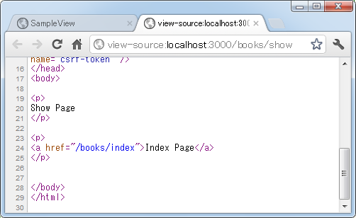

link_toメソッドを使ったリンクの作成
テンプレートで<a>タグを使ったリンクを作成する方法としてlink_toメソッドを使ってリンク用のタグを生成する方法について解説します。
1.link_toメソッドの定義
2.URLやパスを指定
3.ルーティングの名前でリンク先を指定
4.リソースベースでルーティングを設定した場合
5.その他のオプション
link_toメソッドの定義
link_toメソッドはActionView::Helpers::UrlHelperクラスで次のように定義されています。
link_to(*args, &block)
メソッドの引数には、リンクを設定する文字列、リンク先のURL、さまざまなオプションを指定します。リンク先のURLの指定方法やオプションは数多くありますので、比較的よく使う方法をいくつかご紹介します。
URLやパスを指定
外部のサイトのURLや同じアプリケーション内のパスを指定する場合は次のように記述します。
link_to 'Search', 'http://www.google.co.jp/' link_to 'Index Page', '/books/index'
1番目の引数にリンクを設定する文字列、2番目の引数にURLを指定してlink_toメソッドを呼び出すことでリンクが作成されます。例えばテンプレートの<%= ～ %>の中で記述されると、次のように出力が行われます。
<%= link_to 'Search', 'http://www.google.co.jp/' %> --> <a href="http://www.google.co.jp/">Search</a> <%= link_to 'Index Page', '/books/index' %> --> <a href="/books/index">Index Page</a>
「<」などの特別な文字もエスケープされずに出力されます。
では実際に簡単な例で確認してみます。「books」コントローラに次のように「show」アクションと「index」アクションを作成します。
class BooksController < ApplicationController def show end def index end end
「books」コントロールの「show」アクションから呼び出されるテンプレートとして「app/views/books/show.html.erb」ファイルを作成し、次のように記述しました。
<p> Show Page </p> <p> <%= link_to 'Search', 'http://www.google.co.jp/' %> </p> <p> <%= link_to 'Index Page', '/books/index' %> </p>
同じく「books」コントロールの「index」アクションから呼び出されるテンプレートとして「app/views/books/index.html.erb」ファイルを作成し、次のように記述しました。
<p> Index Page </p>
ルーティングの設定として「config/routes.rb」ファイルを次のように記述しました。
SampleView::Application.routes.draw do get "books/show" get "books/index" end
ではアプリケーションを起動し「books」コントロールの「show」アクションを呼び出してみます。すると次のように結果がブラウザに表示されました。
ソースを確認してみると次のように<a>タグが出力されていることが確認できます。

「Index Page」と書かれたリンクをクリックしてみますと「books」コントロールの「index」アクションが呼び出され次のように表示されます。
このように外部のURLや同じアプリケーション内のパスを指定してリンクを作成することができました。
ルーティングの名前でリンク先を指定
先程は利用者が呼び出す場合と同じようにパスを指定してリンクを作成しましたが、ルーティングに名前が設定されている場合は名前に「_path」を付けたものを使って次のように記述することができます。
link_to 'Index Page', books_index_path
ルーティングの名前については「asオプションでルーティングに名前を付ける」を参照して下さい。現在のルーティングを確認してみると次のように名前が設定されています。
「books」コントロールの「index」アクションを呼び出すためのルーティングには「books_index」という名前が付いていますので、このアクションを呼び出すためのリンクを作成する場合にはルーティング名に「_path」を付けた「books_index_path」を指定して下さい。
例えばテンプレートの<%= ～ %>の中で記述されると、次のように出力が行われます。
<%= link_to 'Index Page', books_index_path %> --> <a href="/books/index">Index Page</a>
では実際に試してみます。先程作成した「books」コントロールの「show」アクションから呼び出されるテンプレートの「app/views/books/show.html.erb」ファイルを次のように修正しました。
<p> Show Page </p> <p> <%= link_to 'Index Page', books_index_path %> </p>
アクションメソッドやルーティングの設定はそのままです。アプリケーションを起動し「books」コントロールの「show」アクションを呼び出してみます。すると次のように結果がブラウザに表示されました。
ソースを確認してみると次のように<a>タグが出力されていることが確認できます。

今回は省略しますが、リンクをクリックすると「books」コントロールの「index」アクションが呼び出されます。今回のようにルーティング名でリンク先を設定しておけば、呼び出すURLが変更になった場合でもルーティングの名前が変わっていなければテンプレート側は変更する必要がありません。
リソースベースでルーティングを設定した場合
リソースベースのルーティングを行った場合は、いくつか便利な記述方法が使用できます。(リソースベースのルーティングについては「リソースベースのルーティング設定」をご参照下さい)。
実際に試しながら確認するために、新しく「blogs」コントローラを作成し、同時に「index」「show」「new」「edit」「create」「update」「destroy」アクションを作成します。
ルーティングの設定として「config/routes.rb」ファイルをテキストエディタで開き、次のように記述しました。
SampleView::Application.routes.draw do resources :blogs end
では設定されたルーティングを確認するために「rake routes」を実行して下さい。
いくつかのルーティングには自動的に名前が付いていますので、「ルーティングの名前でリンク先を指定」で解説した通り次のような記述が行えます。
<%= link_to 'Index Page', blogs_path %> <%= link_to 'New Page', new_blog_path %>
「show」アクションや「edit」アクションのように「id」パラメータを指定して呼び出すアクションの場合は、モデルオブジェクト(下記では@blog変数に格納されている)を使って次のように記述します。
<%= link_to 'Show Page', blog_path(@blog) %> <%= link_to 'Edit Page', edit_blog_path(@blog) %>
では実際に試してみます。事前に「blog」モデルを作成済みでサンプル用データを格納してあります。そして「blog」コントローラを次のように変更しました。
class BlogsController < ApplicationController
def index
@blog = Blog.find(2)
end
def show
end
def new
end
def edit
end
def create
end
def update
end
def destroy
end
end
「index」アクションが呼び出されると、findメソッドを使って「id」が2のモデルオブジェクトをインスタント変数に格納します。
次に「blogs」コントロールの「index」アクションから呼び出されるテンプレートの「app/views/blogs/index.html.erb」ファイルを次のように修正しました。
<p> <%= link_to 'Index Page', blogs_path %> </p> <p> <%= link_to 'New Page', new_blog_path %> </p> <p> <%= link_to 'Show Page', blog_path(@blog) %> </p> <p> <%= link_to 'Edit Page', edit_blog_path(@blog) %> </p>
ではアプリケーションを起動し「blogs」コントロールの「index」アクションを呼び出してみます。すると次のように結果がブラウザに表示されました。
4つのリンクが表示されています。ソースを確認してみると次のように<a>タグが出力されていることが確認できます。
<p> <a href="/blogs">Index Page</a> </p> <p> <a href="/blogs/new">New Page</a> </p> <p> <a href="/blogs/2">Show Page</a> </p> <p> <a href="/blogs/2/edit">Edit Page</a> </p>
ルーティングの設定に合わせてリンク先のURLが設定されていることが確認できます。またモデルオブジェクトを指定した場合は、モデルオブジェクトの主キーである「id」カラムの値がパラメータとして指定されています。
create, update, destroyアクション
「create」アクションについては「index」アクションとパスが同じでHTTPメソッドが「POST」となっています。また「update」アクションと「destroy」アクションについては「show」アクションとパスが同じですがHTTPメソッドがそれぞれ「PUT」と「DELETE」となっています。
これらのアクションについては使用するHTTPメソッドを「method」オプションで指定し次のように記述することができます。
<%= link_to 'Create Page', blogs_path, :method => :push %> <%= link_to 'Update Page', blog_path(@blog), :method => :put %> <%= link_to 'Destroy Page', blog_path(@blog), :method => :delete %>
では実際に試してみます。「index」アクションから呼び出されるテンプレートの「app/views/blogs/index.html.erb」ファイルを次のように修正しました。
<p> <%= link_to 'Create Page', blogs_path, :method => :push %> </p> <p> <%= link_to 'Update Page', blog_path(@blog), :method => :put %> </p> <p> <%= link_to 'Destroy Page', blog_path(@blog), :method => :delete %> </p>
ではアプリケーションを起動し「blogs」コントロールの「index」アクションを呼び出してみます。すると次のように結果がブラウザに表示されました。
3つのリンクが表示されています。ソースを確認してみると次のように<a>タグが出力されていることが確認できます。
<p> <a href="/blogs" data-method="push" rel="nofollow">Create Page</a> </p> <p> <a href="/blogs/2" data-method="put" rel="nofollow">Update Page</a> </p> <p> <a href="/blogs/2" data-method="delete" rel="nofollow">Destroy Page</a> </p>
「data-method」属性に使用するHTTPメソッドを表す値が設定されてリンクが作成されています(リンクをクリックした後で、これがどのように処理されるのかは分かっていません)。
show, update, destroyアクションの場合にオブジェクト名だけで指定
「show」「update」「destroy」アクションのように「id」パラメータを指定して呼び出すアクションの場合は、モデルオブジェクト(下記では@blog変数に格納されている)を使って次のように簡略的に記述することができます。(「edit」アクションは除く)。
<%= link_to 'Show Page', @blog %> <%= link_to 'Update Page', @blog, :method => :put %> <%= link_to 'Destroy Page', @blog, :method => :delete %>
今まで「blog_path(@blog)」と書いていたものに対しては単に「@blog」と省略できます。
では実際に試してみます。「index」アクションから呼び出されるテンプレートの「app/views/blogs/index.html.erb」ファイルを次のように修正しました。
<p> <%= link_to 'Show Page', @blog %> </p> <p> <%= link_to 'Update Page', @blog, :method => :put %> </p> <p> <%= link_to 'Destroy Page', @blog, :method => :delete %></p> </p>
ではアプリケーションを起動し「blogs」コントロールの「index」アクションを呼び出してみます。すると次のように結果がブラウザに表示されました。
3つのリンクが表示されています。ソースを確認してみると次のように<a>タグが出力されていることが確認できます。
<p> <a href="/blogs/2">Show Page</a> </p> <p> <a href="/blogs/2" data-method="put" rel="nofollow">Update Page</a> </p> <p> <a href="/blogs/2" data-method="delete" rel="nofollow">Destroy Page</a></p> </p>
このように「xxx_path」の部分を省略してもリンク先が設定されていることが確認できます。
その他のオプション
リンクを作成する時にスタイルシートを使ってスタイルを設定するためにid属性やclass属性を指定したい場合には、「id」オプションや「class」オプションが指定できます。
<%= link_to 'Index Page', blogs_path, :id => 'list' %> <%= link_to 'Index Page', blogs_path, :class => 'main' %>
アンカーリンクを設定したい場合はanchorオプションを使って次のように記述できます。
<%= link_to 'Index Page', blogs_path(:anchor => 'other') %>
クエリー文字列を設定したい場合は名前と値をペアで指定し次のように記述できます。
<%= link_to 'Index Page', blogs_path(:name => 'yamada', :old=> '20') %>
リンクをクリックした時に確認ダイアログを表示させたい場合はconfirmオプションを使って次のように記述します。
<%= link_to 'Index Page', blogs_path, :confirm => "OK?" %>
では実際に試してみます。「index」アクションから呼び出されるテンプレートの「app/views/blogs/index.html.erb」ファイルを次のように修正しました。
<p> <%= link_to 'Index Page', blogs_path, :id => 'list' %> </p> <p> <%= link_to 'Index Page', blogs_path, :class => 'main' %> </p> <p> <%= link_to 'Index Page', blogs_path(:anchor => 'other') %> </p> <p> <%= link_to 'Index Page', blogs_path(:name => 'yamada', :old=> '20') %> </p> <p> <%= link_to 'Search Engine', 'http://www.google.co.jp/', :confirm => "really?" %> </p>
ではアプリケーションを起動し「blogs」コントロールの「index」アクションを呼び出してみます。すると次のように結果がブラウザに表示されました。
5つのリンクが表示されています。ソースを確認してみると次のように<a>タグが出力されていることが確認できます。
<p> <a href="/blogs" id="list">Index Page</a> </p> <p> <a href="/blogs" class="main">Index Page</a> </p> <p> <a href="/blogs#other">Index Page</a> </p> <p> <a href="/blogs?name=yamada&old=20">Index Page</a> </p> <p> <a href="http://www.google.co.jp/" data-confirm="really?">Search Engine</a> </p>
1番目のリンクには「id」属性、2番目のリンクには「class」属性が設定されています。3番目のリンクにはアンカーテキストが設定されており、4番目のリンクには指定したクエリー文字列が2つ設定されています。
5番目のリンクには「data-confirm」属性が設定されています。実際に5番目のリンクをクリックすると次のようなダイアログが表示されます。
「OK」ボタンを押すとリンク先へ移動し、「キャンセル」ボタンを押すと元の画面に戻ります。
( Written by Tatsuo Ikura )

著者 / TATSUO IKURA
初心者～中級者の方を対象としたプログラミング方法や開発環境の構築の解説を行うサイトの運営を行っています。